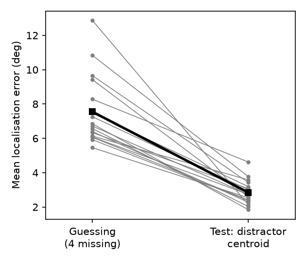

Question. While tracking four target dots, can people point to the centroid of the four distractor dots when those distractors vanish, more accurately than the empirical chance level from a guessing phase? (Directional: test-phase error < guessing error.)
Data and sample. Replication file d19.dta: 17 participants × 120 trials (80 test, 40 guessing), 2,040 trials. Outcome: angle, localisation error in degrees of visual angle (computed in the data file from click and true location; for four missing dots, the area-weighted centroid). No participants excluded (as specified), no trials excluded (no missing values), no trimming. n = 17. Each participant contributes 20 distractor-centroid test trials and 20 four-missing guessing trials.
Coding note. The file does not label which tar_vs_dis code means "distractor". Before looking at any centroid error, I fixed a rule: the code with the larger single-dot test-phase error is the distractor (tracked targets must be localised better). Code 11 had larger single-dot error than code 1 (8.52° vs 6.32°, t(16) = −5.20, p < .001), so code 11 = distractor. The primary result is also reported under the reversed mapping: it does not change the conclusion.
Primary test (pre-specified). Per participant, mean error on distractor-centroid test trials minus mean error on four-missing guessing trials; paired t-test, two-tailed; dz = t/√n, 95% CI by noncentral t.
| Mean error (deg) | |
|---|---|
| Test phase, distractor centroid | 2.85 |
| Guessing phase, four missing (chance) | 7.55 |
| Difference (test − guess) | −4.70, 95% CI [−5.74, −3.66] |
t(16) = −9.59, p = 4.9 × 10⁻⁸, dz = −2.33, 95% CI [−3.25, −1.39]. All 17 participants were more accurate in the test phase than when guessing (Wilcoxon W = 0, p = 1.5 × 10⁻⁵).

Robustness and secondary results (not the basis of the conclusion). - Per-participant medians instead of means: t(16) = −8.85, p = 1.5 × 10⁻⁷, dz = −2.15. - Reversed code mapping (code 1 as distractor): diff = −3.80°, t(16) = −7.49, p = 1.3 × 10⁻⁶, dz = −1.82. - Single distractor vs single-dot guessing: 8.52° vs 9.95°, t(16) = −3.65, p = .002, dz = −0.89. - Target centroid vs guessing: 3.75° vs 7.55°, t(16) = −7.49, p < .001. Target centroid error was larger than distractor centroid error (3.75° vs 2.85°, t(16) = 4.54, p < .001). - Guessing displays generated as target-type vs distractor-type did not differ reliably (7.94° vs 7.16°, p = .14).
Caveats. (1) The target/distractor coding is inferred from the data (by a rule fixed in advance), not given; the conclusion holds under either coding. (2) The "chance" baseline is the guessing phase, which came as a separate block without the tracking task; differences in motivation or strategy between phases could add to the gap, though a gap of 4.7° with every participant in the same direction is unlikely to be explained by that alone. (3) The finding that distractor centroids were localised better than target centroids is unexpected; I report it without explanation.
Conclusion. The claim holds on this data: localisation error for the centroid of the missing distractors (2.85°) was far smaller than the empirical chance error (7.55°), t(16) = −9.59, p < .001, dz = −2.33.